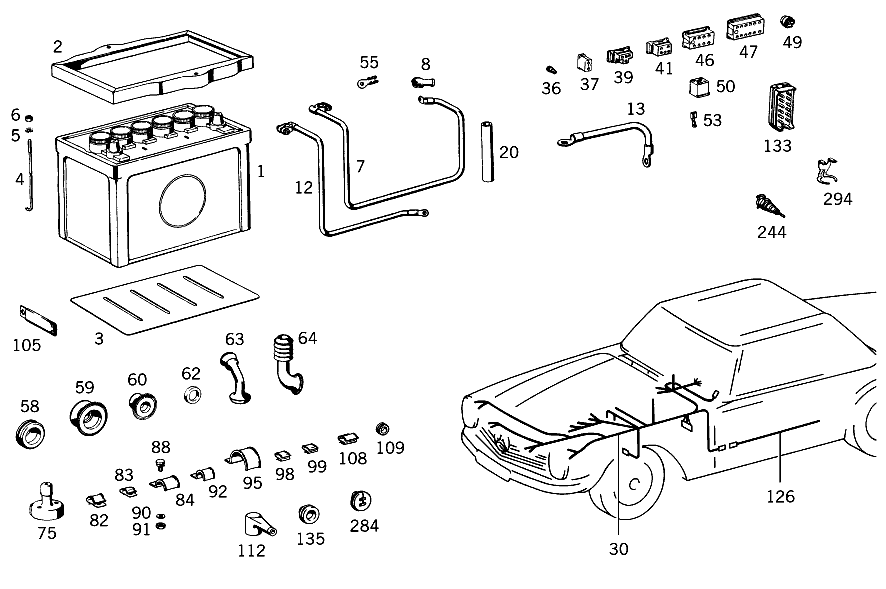

| № | Артикул | Название | Кол. | Примечание | Ограничение |
|---|---|---|---|---|---|
| 1 | A 003 541 33 01 | АКБ | 1 | 12V/55 AH | |
| 2 | A 113 540 00 23 | РАМА КРЕПЛЕНИЯ | 1 | ||
| 3 | A 110 541 00 35 | ПОЛ | 1 | ||
| 4 | A 186 541 01 24 | Стяжный болт | 2 | ||
| 5 | A 094 990 68 10 | Пружинное кольцо | 2 | ||
| 6 | N 000934 006013 | Гайка | - | ||
| 6 | N 304032 006008 | Шестигранная гайка | 2 | ||
| 7 | A 108 540 07 30 | Электрический провод | 1 | ||
| 8 | A 111 546 00 35 | КОЛПАЧОК | - | ||
| 8 | A 116 546 01 35 | Защитный колпачок | 1 | ПРОВОД СТАРТЕРА | |
| 12 | A 201 540 00 31 | ПРОВОД МАССЫ | 1 | FROM BATTERY NEG. POLE TO SIDE MEMBER | |
| 13 | A 116 540 05 31 | Электрический провод | 1 | FROM CROSS MEMBER TO ENGINE | |
| 20 | A 000 546 29 30 | ИЗОЛИРУЮЩИЙ ШЛАНГ | - | НАД ПРОВОДОМ СТАРТЕРА И ОСНОВНЫМ ЖГУТОМ ЭЛЕКТРОПРОВОДКИ 160 MM [402] БОЛЬШЕ НЕ ПОСТАВЛЯЕТСЯ | |
| 36 | A 000 545 47 28 | - Сцепление, механическое | 1 | ОДНОКОНТАКТ. | |
| 37 | A 002 545 49 28 | - ШТЕКЕР | - | ||
| 37 | A 008 545 37 28 | - Сцепление, механическое | 8 | ДВУХПОЛЮСНЫЙ; 2\-PIN | |
| 39 | A 004 545 92 28 | - Сцепление, механическое | 1 | 3\-КОНТАКТ. | |
| 41 | A 004 545 86 28 | - Штекер | - | ||
| 41 | A 007 545 00 28 | - КОРПУС ШТЕК. ГНЕЗДА | - | ||
| 41 | A 015 545 49 28 | - КОРПУС ШТЕК. ГНЕЗДА | 2 | ЧЕТЫРЁХПОЛЮСНЫЙ; 4\-PIN | |
| 46 | A 005 545 13 28 | - ШТЕКЕР | - | ||
| 46 | A 006 545 80 28 | - CONTACT SUPPORT | 2 | ШЕСТИПОЛЮСНЫЙ; 6\-PIN | |
| 47 | A 000 545 36 28 | - ШТЕКЕР | 2 | 12\-КОНТАКТН. | |
| 49 | A 000 544 04 86 | - ШТЕКЕР | 2 | HEADLAMP | |
| 50 | A 002 545 95 28 | - Корпус штекерной втулки | 1 | ||
| 53 | A 000 546 40 40 | - КАБЕЛЬНЫЙ НАКОНЕЧНИК | 3 | ||
| 55 | A 000 546 42 40 | - Соединитель проводов | 1 | НА ГЕНЕРАТОРЕ, КЛЕММА D\+ | |
| 58 | A 186 997 07 81 | - втулка | 1 | [402] БОЛЬШЕ НЕ ПОСТАВЛЯЕТСЯ | |
| 59 | A 111 997 13 81 | - резиновая втулка | 1 | ||
| 60 | A 111 997 15 81 | - резиновая втулка | 1 | ||
| 62 | A 000 997 41 40 | - УПЛОТНИТ. КОЛЬЦО | 1 | Рулевое управление: ВлевоАвтоматическая коробка переключения передач | |
| 63 | A 110 546 00 85 | - Защитная труба | 1 | ||
| 64 | A 115 546 00 85 | - Защитная труба | 1 | ||
| 65 | A 111 540 00 50 | - БЛОК ПРЕДОХРАНИТЕЛЕЙ | 1 | ||
| 66 | A 000 545 10 03 | - Крышка | 1 | ||
| 67 | A 000 545 01 80 | - уплотнение | 1 | ||
| 68 | A 000 545 02 80 | - ПРОКЛАДКА УПЛОТНИТЕЛЬНАЯ | 1 | ||
| 69 | A 000 545 20 04 | - Переключатель | 1 | ||
| 73 | A 110 545 11 37 | - Поворотная кнопка | 1 | [402] БОЛЬШЕ НЕ ПОСТАВЛЯЕТСЯ | |
| 74 | A 110 545 02 72 | - Декоративная розетка | 1 | ||
| 75 | A 000 545 11 12 | - ВЫКЛЮЧАТЕЛЬ | 1 | ||
| 82 | A 000 988 34 78 | Скоба | 7 | ||
| 83 | A 000 988 33 78 | Скоба | 3 | ||
| 84 | A 186 995 00 37 | хомут | 1 | MAIN CABLE HARNESS TO LEFT WHEEL ARCH PANEL | |
| 88 | A 120 420 02 27 | Т-образный винт | 1 | MAIN CABLE HARNESS TO LEFT WHEEL ARCH PANEL | |
| 90 | A 094 990 68 10 | Пружинное кольцо | 2 | MAIN CABLE HARNESS TO LEFT WHEEL ARCH PANEL | |
| 91 | N 000934 006007 | Гайка | 2 | MAIN CABLE HARNESS TO LEFT WHEEL ARCH PANEL | |
| 92 | A 187 995 00 37 | хомут | 6 | MAIN CABLE HARNESS TO CROSS MEMBER AND TO TOEBOARD | |
| 95 | A 136 995 01 37 | хомут | 1 | MAIN CABLE HARNESS TO FRONT PANEL PILLAR | |
| 98 | A 094 988 15 00 | Скоба | 1 | STOP LIGHT SWITCH CABLE TO PEDAL ASSEMBLY | |
| 99 | A 000 988 17 78 | СКОБА | 2 | PLUG CONNECTION CABLE TO INSTRUMENT PANEL | |
| 105 | A 112 540 11 73 | ДЕРЖАТЕЛЬ | 4 | MAIN CABLE HARNESS TO LOWER PART OF INSTRUMENT PANEL | |
| 108 | A 000 988 18 78 | Скоба | 1 | MAIN CABLE HARNESS TO LOWER PART OF INSTRUMENT PANEL | |
| 109 | A 000 997 28 81 | Проходная втулка | 1 | Рулевое управление: ВлевоКоробка передач | |
| 109 | A 000 997 28 81 | Проходная втулка | 2 | Рулевое управление: ВлевоАвтоматическая коробка переключения передач | |
| 112 | A 000 545 07 45 | Защитный колпачок | 1 | ELECTRIC CABLE TO THERMOSWITCH | |
| 113 | A 113 546 03 43 | ДЕРЖАТЕЛЬ | 1 | CABLE PLUG CONNECTION | |
| 133 | A 000 545 37 28 | - ШТЕКЕР | 1 | 12\-КОНТАКТН. | |
| 135 | A 186 997 07 81 | - втулка | 1 | [402] БОЛЬШЕ НЕ ПОСТАВЛЯЕТСЯ | |
| 144 | A 000 545 99 01 | Закр. блок предохр. | 1 | ||
| 151 | A 113 545 13 40 | ДЕРЖАТЕЛЬ | 1 | ||
| 152 | A 113 540 05 09 | ЖГУТ ЭЛ.-ПРОВОДКИ | 1 | AT TRANSMISSION; AIR POLLUTION CONTROL Рулевое управление: ВлевоКоробка передач | |
| 154 | A 002 545 49 28 | - ШТЕКЕР | - | Рулевое управление: ВлевоКоробка передач | |
| 154 | A 008 545 37 28 | - Сцепление, механическое | 3 | ДВУХПОЛЮСНЫЙ; 2\-PIN Рулевое управление: ВлевоКоробка передач | |
| 157 | A 100 997 03 81 | - КАБ. ВТУЛКА | 1 | Рулевое управление: ВлевоКоробка передач | |
| 158 | A 111 997 23 81 | - КАБ. ВТУЛКА | - | Рулевое управление: ВлевоАвтоматическая коробка переключения передач | |
| 158 | A 008 997 17 81 | - втулка | 1 | Рулевое управление: ВлевоАвтоматическая коробка переключения передач | |
| 159 | A 111 997 21 81 | - резиновая втулка | 1 | Рулевое управление: ВлевоКоробка передач | |
| 160 | A 000 546 44 40 | - КАБЕЛЬНЫЙ НАКОНЕЧНИК | 2 | ||
| 164 | A 136 995 01 35 | хомут | 1 | ||
| 166 | A 000 545 84 11 | ВЫКЛЮЧАТЕЛЬ | - | Рулевое управление: ВлевоКоробка передач | |
| 166 | A 004 545 04 14 | Переключатель | - | Рулевое управление: ВлевоКоробка передач | |
| 166 | A 004 545 18 14 | Переключатель | 2 | AT TRANSMISSION COVER Рулевое управление: ВлевоКоробка передач | |
| 167 | A 113 540 06 73 | ДЕРЖАТЕЛЬ | 1 | AT TRANSMISSION COVER Рулевое управление: ВлевоКоробка передач | |
| 168 | A 113 545 01 38 | ФИТИНГ | - | Рулевое управление: ВлевоКоробка передач [402] БОЛЬШЕ НЕ ПОСТАВЛЯЕТСЯ | |
| 169 | A 113 545 00 53 | РАСПОРН. ТРУБКА | - | BRACKET TO TRANSMISSION COVER Рулевое управление: ВлевоКоробка передач [402] БОЛЬШЕ НЕ ПОСТАВЛЯЕТСЯ | |
| 170 | A 153 990 06 40 | ШАЙБА | 1 | BRACKET TO TRANSMISSION COVER Рулевое управление: ВлевоКоробка передач | |
| 174 | A 000 545 01 32 | БЛОК УПРАВЛЕНИЯ | 1 | Рулевое управление: ВлевоАвтоматическая коробка переключения передач | |
| 179 | A 000 542 59 19 | Контактор | 1 | Рулевое управление: ВлевоАвтоматическая коробка переключения передач | |
| 186 | A 000 542 16 56 | КОРПУС | 1 | КОМБИНАЦИЯ ПРИБОРОВ [002] 043 FROM CHASSIS 002980 | |
| 188 | A 000 542 13 78 | БЛОК ЗОЛОТНИКОВ | 1 | [002] 043 FROM CHASSIS 002980 | |
| 189 | A 000 542 16 25 | - Поворотный выключатель | 1 | [002] 043 FROM CHASSIS 002980 | |
| 191 | A 000 545 37 28 | - ШТЕКЕР | 1 | 12\-КОНТАКТН. | |
| 193 | A 001 542 58 02 | МАНОМЕТР МАСЛА | 1 | [002] 043 FROM CHASSIS 002980 | |
| 194 | A 002 542 96 05 | ТЕЛЕТЕРМОМЕТР | 1 | GRADUATION IN DEGS.F. [002] 043 FROM CHASSIS 002980 | |
| 195 | A 000 542 88 03 | ИЗМЕРИТЕЛЬ ТОПЛИВА | 1 | ||
| 198 | A 000 542 04 72 | ГАЙКА | 1 | ||
| 199 | A 000 542 06 72 | ГАЙКА | 2 | ||
| 201 | A 100 542 01 38 | ПОДКЛАДКА | 1 | КОМБИНАЦИЯ ПРИБОРОВ | |
| 202 | A 005 542 01 06 | СПИДОМЕТР | 1 | С ШКАЛОЙ В МИЛЯХ | |
| 203 | A 000 542 05 56 | - КОРПУС | 1 | [417] БОЛЬШЕ НЕ ПОСТАВЛЯЕТСЯ, ЗАКАЗЫВАТЬ КОМПЛЕКТ ПОСТАВКИ | |
| 204 | A 000 544 25 93 | - Ламповый патрон | 2 | ||
| 207 | A 000 542 59 16 | ДАТЧИК ОБОРОТОВ | 1 | ||
| 220 | A 100 542 00 38 | ПОДКЛАДКА | 2 | SPEEDOMETER AND TACHOMETER | |
| 238 | A 100 542 01 11 | ЧАСЫ | 1 | ||
| 244 | A 000 545 15 25 | РОЗЕТКА | 1 | ЛАМПА РУЧНАЯ [402] БОЛЬШЕ НЕ ПОСТАВЛЯЕТСЯ | |
| 250 | A 000 542 68 19 | Реле | 1 | МОТОР СТЕКЛООЧИСТИТЕЛЯ | |
| 257 | A 000 545 35 09 | Переключатель | 1 | STOP LIGHT, MECHANICAL | |
| 258 | A 113 545 00 73 | ПРЕДОХРАНИТЕЛЬ | 1 | ||
| 260 | A 111 990 08 40 | Диск | NB | ПО НЕОБХОДИМОСТИ 1.0 MM | |
| 268 | A 113 545 00 72 | ГАЙКА | 1 | ||
| 271 | A 113 292 00 41 | УПОР | 1 | ||
| 273 | A 113 542 05 07 | ВАЛ ГИБКИЙ | 1 | СПИДОМЕТР 1500mm Рулевое управление: ВлевоКоробка передач | |
| 276 | A 113 542 07 07 | ВАЛ ГИБКИЙ | 1 | ДАТЧИК ОБОРОТОВ 1300 MM | |
| 278 | A 111 542 05 40 | ДЕРЖАТЕЛЬ | 1 | ||
| 284 | A 110 997 07 81 | резиновая втулка | 2 | SPEEDOMETER AND TACHOMETER SHAFTS, OIL PRESSURE GAUGE LINE AND CAPILLARY TUBE THRU FIRE WALL | |
| 287 | A 003 542 19 20 | Звуковой сигнал | 1 | НИЗК. ЧАСТ. [402] БОЛЬШЕ НЕ ПОСТАВЛЯЕТСЯ | |
| 290 | N 900161 010103 | БОЛТ | 2 | ||
| 291 | N 000127 010202 | Пружинное кольцо | 2 | ||
| 294 | A 002 988 69 78 | СКОБА | 1 | ВЫКЛЮЧ. KICK\-DOWN Рулевое управление: ВлевоАвтоматическая коробка переключения передач | |
| 297 | A 000 158 02 40 | - ДЕРЖАТЕЛЬ | 1 | [402] БОЛЬШЕ НЕ ПОСТАВЛЯЕТСЯ | |
| 299 | N 000084 005222 | - БОЛТ | 1 | ||
| 302 | N 000562 005000 | - Гайка | 1 | ||
| 307 | A 000 158 11 85 | Защитная крышка | 1 | ||
| 310 | A 000 546 33 35 | Защитный колпачок | 2 | ||
| 312 | A 201 990 22 01 | БОЛТ | 2 | IGNITION COIL TO SIDE MEMBER | |
| 315 | N 000127 008203 | Пружинное кольцо | 2 | IGNITION COIL TO SIDE MEMBER | |
| 318 | A 000 990 08 48 | Диск | 2 | IGNITION COIL TO SIDE MEMBER | |
| 325 | A 114 542 06 40 | ДЕРЖАТЕЛЬ | 1 | [402] БОЛЬШЕ НЕ ПОСТАВЛЯЕТСЯ | |
| 334 | A 114 546 00 03 | ЭЛ. ПРОВОД | 1 | МАССА [402] БОЛЬШЕ НЕ ПОСТАВЛЯЕТСЯ | |
| 337 | A 113 542 06 40 | ДЕРЖАТЕЛЬ | 1 | ||
| 340 | A 000 545 41 32 | Блок управл. | 1 | ||
| 348 | A 000 546 70 41 | Кабельный соединитель | 1 | ДВУХПОЛЮСНЫЙ | |
| 352 | A 113 540 12 09 | ЖГУТ ЭЛ.-ПРОВОДКИ | 1 | ТРАНЗИСТОРН.СИСТЕМА ЗАЖИГАНИЯ | |
| 357 | A 108 540 16 09 | ЖГУТ ЭЛ.-ПРОВОДКИ | 1 | ПУСК НА ПРИБОРН. ПАНЕЛИ | |
| 358 | A 004 545 86 28 | - Штекер | - | ||
| 358 | A 007 545 00 28 | - КОРПУС ШТЕК. ГНЕЗДА | - | ||
| 358 | A 015 545 49 28 | - КОРПУС ШТЕК. ГНЕЗДА | 1 | ЧЕТЫРЁХПОЛЮСНЫЙ; 4\-PIN | |
| 360 | A 003 545 28 28 | ШТЕКЕР | - | ||
| 360 | A 009 545 92 28 | ШТЕКЕР | 1 | ||
| 363 | A 113 545 04 40 | ДЕРЖАТЕЛЬ | 1 | ||
| 367 | A 113 540 11 09 | ЖГУТ ЭЛ.-ПРОВОДКИ | 1 | СИСТЕМА НЕЙТРАЛИЗАЦИИ ОГ Рулевое управление: ВлевоКоробка передач [010] FROM CHASSIS 011948 ALSO INSTALLED ON 011784,011830,011899,011903,011912-011916,011918,011920,011921,011930-011933,011941-011945,011947 | |
| 377 | A 000 997 28 81 | - Проходная втулка | 1 | Рулевое управление: ВлевоКоробка передач [010] FROM CHASSIS 011948 ALSO INSTALLED ON 011784,011830,011899,011903,011912-011916,011918,011920,011921,011930-011933,011941-011945,011947 | |
| 380 | A 000 545 24 32 | БЛОК УПРАВЛЕНИЯ | 1 | ЧИСЛО ОБОРОТОВ Рулевое управление: ВлевоАвтоматическая коробка переключения передач [010] FROM CHASSIS 011948 ALSO INSTALLED ON 011784,011830,011899,011903,011912-011916,011918,011920,011921,011930-011933,011941-011945,011947 | |
| 383 | A 001 540 00 97 | КЛАПАН | - | ||
| 383 | A 001 540 70 97 | КЛАПАН | - | ||
| 383 | A 001 540 86 97 | Электромагнитный клапан | 1 | [010] FROM CHASSIS 011948 ALSO INSTALLED ON 011784,011830,011899,011903,011912-011916,011918,011920,011921,011930-011933,011941-011945,011947 | |
| 383 | A 001 540 86 97 | Электромагнитный клапан | 1 | [010] FROM CHASSIS 011948 ALSO INSTALLED ON 011784,011830,011899,011903,011912-011916,011918,011920,011921,011930-011933,011941-011945,011947 | |
| 387 | A 000 542 93 19 | РЕЛЕ | 1 | Рулевое управление: ВлевоКоробка передач [010] FROM CHASSIS 011948 ALSO INSTALLED ON 011784,011830,011899,011903,011912-011916,011918,011920,011921,011930-011933,011941-011945,011947 | |
| 391 | A 113 542 05 40 | ДЕРЖАТЕЛЬ | 1 | [010] FROM CHASSIS 011948 ALSO INSTALLED ON 011784,011830,011899,011903,011912-011916,011918,011920,011921,011930-011933,011941-011945,011947 | |
| 395 | A 000 542 58 19 | Контактор | 1 | Рулевое управление: ВлевоАвтоматическая коробка переключения передач [010] FROM CHASSIS 011948 ALSO INSTALLED ON 011784,011830,011899,011903,011912-011916,011918,011920,011921,011930-011933,011941-011945,011947 | |
| 405 | A 001 154 68 06 | РЕГУЛЯТОР | 1 | ||
| 411 | A 000 542 26 23 | Зуммер | 1 | [010] FROM CHASSIS 011948 ALSO INSTALLED ON 011784,011830,011899,011903,011912-011916,011918,011920,011921,011930-011933,011941-011945,011947 | |
| 415 | A 124 545 04 14 | ВЫКЛЮЧАТЕЛЬ | - | ||
| 415 | A 124 545 02 14 | Кронштейн зуммера | 1 | КОНТАКТ ЗУММЕРА [010] FROM CHASSIS 011948 ALSO INSTALLED ON 011784,011830,011899,011903,011912-011916,011918,011920,011921,011930-011933,011941-011945,011947 | |
| A 000 546 08 37 | КАБ. ВТУЛКА | - | |||
| A 000 546 09 37 | КАБ. ВТУЛКА | 1 | ПРОВОД СТАРТЕРА | ||
| A 108 540 66 09 | Жгут электропроводки | 1 | СОЕДИНИТ. ПРОВОДОВ К СТАРТЕРУ | ||
| N 900261 008001 | Кабельный наконечник | 1 | |||
| N 000933 008131 | Винт | - | |||
| N 304017 008016 | Винт с 6-гранной головкой | 1 | GROUND CABLE TO LEFT SIDE MEMBER; M8X16 | ||
| N 000127 008203 | Пружинное кольцо | 1 | GROUND CABLE TO LEFT SIDE MEMBER | ||
| N 000934 008010 | Гайка | - | |||
| N 304032 008006 | Шестигранная гайка | 1 | GROUND CABLE TO LEFT SIDE MEMBER; M8 | ||
| A 001 997 41 90 | Кабельная стяжка | 1 | 7X100 MM | ||
| A 113 540 27 05 | ЖГУТ ЭЛ.-ПРОВОДКИ | 1 | Рулевое управление: ВлевоКоробка передач | ||
| A 113 540 28 05 | ЖГУТ ЭЛ.-ПРОВОДКИ | 1 | Рулевое управление: ВлевоАвтоматическая коробка переключения передач | ||
| A 003 545 47 28 | - ШТЕКЕР | - | |||
| A 008 545 08 28 | - Корпус штекерной втулки | 2 | ДВУХПОЛЮСНЫЙ; 2\-PIN RK4 | ||
| A 004 545 86 28 | - Штекер | - | |||
| A 007 545 00 28 | - КОРПУС ШТЕК. ГНЕЗДА | - | |||
| A 015 545 49 28 | - КОРПУС ШТЕК. ГНЕЗДА | 4 | 3\-КОНТАКТ.; 4\-PIN | ||
| A 005 545 13 28 | - ШТЕКЕР | - | |||
| A 006 545 80 28 | - CONTACT SUPPORT | 2 | ЧЕТЫРЁХПОЛЮСНЫЙ; 6\-PIN | ||
| A 004 545 95 28 | - ШТЕКЕР | 1 | ЧЕТЫРЁХПОЛЮСНЫЙ [402] БОЛЬШЕ НЕ ПОСТАВЛЯЕТСЯ | ||
| A 004 545 26 28 | - TS Сцепление | 1 | ВОСЬМИПОЛЮСНЫЙ | ||
| A 002 545 35 28 | - ШТЕКЕР | - | |||
| A 009 545 26 28 | - Сцепление, механическое | 1 | 12\-КОНТАКТН.; 12\-PIN | ||
| A 004 545 94 28 | - Корпус штекерной втулки | 1 | ДВУХПОЛЮСНЫЙ; 2\-PIN | ||
| A 000 546 46 40 | - КАБЕЛЬНЫЙ НАКОНЕЧНИК | 3 | |||
| A 000 546 69 40 | - Штекерная втулка | 2 | |||
| A 000 546 44 40 | - КАБЕЛЬНЫЙ НАКОНЕЧНИК | 2 | Рулевое управление: ВлевоАвтоматическая коробка переключения передач | ||
| A 000 997 28 81 | - Проходная втулка | 1 | |||
| A 000 997 20 81 | - Проходная втулка | 1 | |||
| A 000 545 26 04 | - ВЫКЛЮЧАТЕЛЬ | 1 | |||
| N 000085 004100 | - Винт | 10 | |||
| N 006797 004230 | - Зубчатая шайба | 10 | |||
| A 000 545 12 12 | - ВЫКЛЮЧАТЕЛЬ | 1 | |||
| A 000 545 81 34 | предохранитель | 10 | [402] БОЛЬШЕ НЕ ПОСТАВЛЯЕТСЯ | ||
| N 072581 025100 | ПРЕДОХРАНИТЕЛЬ | 2 | |||
| N 007985 004136 | Винт | 2 | ГНЕЗДО ПРЕДОХР. НА МОТОР.ЩИТЕ; M4X12 | ||
| N 000137 004202 | Пружинная шайба | 2 | ГНЕЗДО ПРЕДОХР. НА МОТОР.ЩИТЕ | ||
| N 007983 004332 | Шуруп | 2 | FOOT DIMMER SWITCH TO TOEBOARD | ||
| A 136 995 00 37 | хомут | 1 | MAIN CABLE HARNESS TO LEFT WHEEL ARCH PANEL | ||
| A 001 988 10 78 | Скоба | 1 | MAIN CABLE HARNESS TO LEFT WHEEL ARCH PANEL | ||
| N 000933 006102 | Винт | - | |||
| N 304017 006016 | Винт с 6-гранной головкой | 1 | MAIN CABLE HARNESS TO LEFT WHEEL ARCH PANEL; M6X16 | ||
| N 007981 004243 | Шуруп | - | |||
| N 000000 002062 | Шуруп | 6 | MAIN CABLE HARNESS TO CROSS MEMBER AND TO TOEBOARD | ||
| A 186 995 00 37 | хомут | 6 | ГЛ. ЖГУТ ПРОВОДКИ Рулевое управление: ВлевоАвтоматическая коробка переключения передач | ||
| N 007981 004322 | Шуруп | 1 | MAIN CABLE HARNESS TO FRONT PANEL PILLAR | ||
| A 002 988 48 78 | Скоба | 1 | РАЗЪЕМ ВЫКЛ\-ЛЯ ФОНАРЯ ЗАДН.ХОДА | ||
| A 001 997 42 90 | связующее вещество | - | |||
| A 001 997 43 90 | Кабельная стяжка | 2 | ELECTRIC CABLE TO WATER PIPE 140mm; 9X250 MM | ||
| N 040621 014201 | - ИЗОЛИРУЮЩИЙ ШЛАНГ | 4 | MAIN CABLE HARNESS TO LOWER PART OF INSTRUMENT PANEL [404] ЗАКАЗЫВАТЬ ПОГОННЫМИ МЕТРАМИ | ||
| N 007981 003214 | Шуруп | 4 | MAIN CABLE HARNESS TO LOWER PART OF INSTRUMENT PANEL; B3,9X9,5 | ||
| A 094 988 15 00 | Скоба | 1 | MAIN CABLE HARNESS TO LOWER PART OF INSTRUMENT PANEL | ||
| A 000 997 20 81 | Проходная втулка | 1 | SUPERTONE HORN CABLE | ||
| A 000 546 33 35 | Защитный колпачок | 1 | ПРОВОД НА ГЕНЕРАТОРЕ | ||
| N 007981 004224 | Шуруп | - | |||
| N 000000 000459 | Шуруп | 2 | BRACKET TO LOWER PART OF INSTRUMENT PANEL; MBN 10169 4.8 X 9.5 | ||
| N 007981 002320 | Шуруп | 6 | INSTRUMENT CLUSTER CABLE CONNECTOR AND STEERING COLUMN JACKET TUBE CABLE TO BRACKET | ||
| N 007981 002241 | Шуруп | 3 | для CABLE CONNECTOR, TAIL LAMP CABLE HARNESS | ||
| N 000933 004016 | БОЛТ | 4 | СОЕДИНЕНИЕ "МАССЫ" | ||
| N 000933 008131 | Винт | - | |||
| N 304017 008016 | Винт с 6-гранной головкой | 1 | СОЕДИНЕНИЕ "МАССЫ"; M8X16 | ||
| N 000127 004203 | Пружинное кольцо | - | |||
| N 912004 004102 | Пружинное кольцо | 4 | СОЕДИНЕНИЕ "МАССЫ" | ||
| N 000127 008203 | Пружинное кольцо | 1 | СОЕДИНЕНИЕ "МАССЫ" | ||
| N 000934 004004 | Гайка | 4 | СОЕДИНЕНИЕ "МАССЫ"; M4 | ||
| N 000933 006102 | Винт | - | |||
| N 304017 006016 | Винт с 6-гранной головкой | 1 | ПРОВОД МАССЫ НА ПЕРЕДНЕЙ ПАНЕЛИ; M6X16 | ||
| A 094 990 68 10 | Пружинное кольцо | 1 | ПРОВОД МАССЫ НА ПЕРЕДНЕЙ ПАНЕЛИ | ||
| N 000934 006007 | Гайка | 1 | ПРОВОД МАССЫ НА ПЕРЕДНЕЙ ПАНЕЛИ | ||
| A 113 540 06 07 | ЖГУТ ЭЛ.-ПРОВОДКИ | 1 | БЛОК ЗАДНИХ ФОНАРЕЙ | ||
| A 002 545 49 28 | - ШТЕКЕР | - | |||
| A 008 545 37 28 | - Сцепление, механическое | 3 | ДВУХПОЛЮСНЫЙ; 2\-PIN | ||
| A 004 545 86 28 | - Штекер | - | |||
| A 007 545 00 28 | - КОРПУС ШТЕК. ГНЕЗДА | - | |||
| A 015 545 49 28 | - КОРПУС ШТЕК. ГНЕЗДА | 1 | ЧЕТЫРЁХПОЛЮСНЫЙ; 4\-PIN | ||
| A 005 545 13 28 | - ШТЕКЕР | - | |||
| A 006 545 80 28 | - CONTACT SUPPORT | 2 | ШЕСТИПОЛЮСНЫЙ; 6\-PIN | ||
| A 111 997 02 81 | - втулка | 1 | 6MM/18MM | ||
| A 094 988 15 00 | Скоба | 5 | LUGGAGE COMPARTMENT LAMP CABLE TO BODY | ||
| N 072571 001035 | Хомут | 1 | LUGGAGE COMPARTMENT LAMP CABLE TO BODY | ||
| N 007981 004243 | Шуруп | - | |||
| N 000000 002062 | Шуруп | 1 | LUGGAGE COMPARTMENT LAMP CABLE TO BODY | ||
| A 120 420 02 27 | Т-образный винт | 1 | с LOCK PLATE, GROUND CABLE TO FOLDING TOP CASE CENTER PIECE | ||
| A 094 990 68 10 | Пружинное кольцо | 1 | GROUND CABLE TO FOLDING TOP CASE CENTRAL PIECE | ||
| N 000934 006007 | Гайка | 1 | GROUND CABLE TO FOLDING TOP CASE CENTRAL PIECE | ||
| N 000933 004016 | БОЛТ | 2 | TAIL LAMP GROUND CONNECTION | ||
| N 000127 004203 | Пружинное кольцо | - | |||
| N 912004 004102 | Пружинное кольцо | 2 | TAIL LAMP GROUND CONNECTION | ||
| N 000934 004004 | Гайка | 2 | TAIL LAMP GROUND CONNECTION; M4 | ||
| A 000 545 81 34 | предохранитель | 1 | [402] БОЛЬШЕ НЕ ПОСТАВЛЯЕТСЯ | ||
| N 007985 004179 | Винт | 2 | ГНЕЗДО ПРЕДОХРАНИТ. НА ДЕРЖАТЕЛЕ | ||
| N 000934 004004 | Гайка | 2 | ГНЕЗДО ПРЕДОХРАНИТ. НА ДЕРЖАТЕЛЕ; M4 | ||
| N 000127 004203 | Пружинное кольцо | - | |||
| N 912004 004102 | Пружинное кольцо | 2 | ГНЕЗДО ПРЕДОХРАНИТ. НА ДЕРЖАТЕЛЕ | ||
| N 009021 004108 | Шайба | - | |||
| A 094 990 63 08 | Шайба | 2 | ГНЕЗДО ПРЕДОХРАНИТ. НА ДЕРЖАТЕЛЕ | ||
| A 113 540 04 09 | ЖГУТ ЭЛ.-ПРОВОДКИ | 1 | AT TRANSMISSION; AIR POLLUTION CONTROL Рулевое управление: ВлевоАвтоматическая коробка переключения передач | ||
| A 004 545 86 28 | - Штекер | - | Рулевое управление: ВлевоАвтоматическая коробка переключения передач | ||
| A 007 545 00 28 | - КОРПУС ШТЕК. ГНЕЗДА | - | Рулевое управление: ВлевоАвтоматическая коробка переключения передач | ||
| A 015 545 49 28 | - КОРПУС ШТЕК. ГНЕЗДА | 1 | ЧЕТЫРЁХПОЛЮСНЫЙ; 4\-PIN Рулевое управление: ВлевоАвтоматическая коробка переключения передач | ||
| A 005 545 13 28 | - ШТЕКЕР | - | Рулевое управление: ВлевоАвтоматическая коробка переключения передач | ||
| A 006 545 80 28 | - CONTACT SUPPORT | 1 | ЧЕТЫРЁХПОЛЮСНЫЙ; 6\-PIN Рулевое управление: ВлевоАвтоматическая коробка переключения передач | ||
| A 005 545 13 28 | - ШТЕКЕР | - | Рулевое управление: ВлевоАвтоматическая коробка переключения передач | ||
| A 006 545 80 28 | - CONTACT SUPPORT | 1 | ШЕСТИПОЛЮСНЫЙ; 6\-PIN Рулевое управление: ВлевоАвтоматическая коробка переключения передач | ||
| A 001 997 41 90 | Кабельная стяжка | NB | 100 MM; 7X100 MM | ||
| A 001 997 42 90 | связующее вещество | - | |||
| A 001 997 43 90 | Кабельная стяжка | NB | 140mm; 9X250 MM | ||
| A 000 988 18 78 | Скоба | 1 | Рулевое управление: ВлевоКоробка передач | ||
| A 113 540 00 84 | РЫЧАГ | 1 | Рулевое управление: ВлевоКоробка передач | ||
| N 000933 006121 | Винт | - | Рулевое управление: ВлевоКоробка передач | ||
| N 304017 006020 | Винт с 6-гранной головкой | 1 | M6X20 Рулевое управление: ВлевоКоробка передач | ||
| A 094 990 57 07 | Зубчатая шайба | 1 | Рулевое управление: ВлевоКоробка передач [402] БОЛЬШЕ НЕ ПОСТАВЛЯЕТСЯ | ||
| A 000 545 01 32 | БЛОК УПРАВЛЕНИЯ | 1 | Рулевое управление: ВлевоАвтоматическая коробка переключения передач | ||
| N 000933 006126 | Винт | 2 | РЕЛЕ НА ДЕРЖАТ. Рулевое управление: ВлевоАвтоматическая коробка переключения передач | ||
| A 094 990 68 10 | Пружинное кольцо | 2 | РЕЛЕ НА ДЕРЖАТ. Рулевое управление: ВлевоАвтоматическая коробка переключения передач | ||
| N 000934 006007 | Гайка | 2 | РЕЛЕ НА ДЕРЖАТ. Рулевое управление: ВлевоАвтоматическая коробка переключения передач | ||
| N 000084 004143 | Винт | 2 | РЕЛЕ НА ДЕРЖАТ. Рулевое управление: ВлевоАвтоматическая коробка переключения передач | ||
| N 006797 004132 | Зубчатая шайба | 2 | РЕЛЕ НА ДЕРЖАТ.; M4 Рулевое управление: ВлевоАвтоматическая коробка переключения передач | ||
| N 000934 004004 | Гайка | 2 | РЕЛЕ НА ДЕРЖАТ.; M4 Рулевое управление: ВлевоАвтоматическая коробка переключения передач | ||
| A 002 542 40 05 | ТЕЛЕТЕРМОМЕТР | - | |||
| A 002 542 96 05 | ТЕЛЕТЕРМОМЕТР | 1 | GRADUATION IN DEGS.F. | ||
| N 000084 003100 | Винт | 3 | OIL PRESSURE GAUGE AND COOLING WATER TEMPERATURE GAUGE | ||
| N 000084 003101 | Винт | 2 | ДАТЧИК УРОВНЯ ТОПЛИВА | ||
| N 000084 003122 | Винт | 2 | РЕГУЛИР. СОПРОТИВЛ. | ||
| N 072601 012800 | Лампа накаливания | 7 | 12V/2W | ||
| N 072601 012800 | - Лампа накаливания | 2 | 12V/2W | ||
| A 000 542 04 72 | - ГАЙКА | 1 | |||
| A 000 544 25 93 | - Ламповый патрон | 2 | |||
| N 072601 012800 | - Лампа накаливания | 2 | 12V/2W | ||
| A 000 542 04 72 | - ГАЙКА | 1 | |||
| A 113 542 02 44 | ТРУБОПРОВОД | 1 | МАНОМЕТР МАСЛА | ||
| N 072601 012800 | - Лампа накаливания | 1 | 12V/2W | ||
| A 000 988 18 78 | Скоба | 1 | |||
| A 000 542 61 19 | РЕЛЕ | 1 | |||
| N 007981 004224 | Шуруп | - | |||
| N 000000 000459 | Шуруп | 1 | РЕЛЕ НА ДЕРЖАТ.; MBN 10169 4.8 X 9.5 | ||
| A 111 990 09 40 | Диск | NB | ПО НЕОБХОДИМОСТИ 0.5mm | ||
| A 111 990 38 40 | ШАЙБА | NB | ПО НЕОБХОДИМОСТИ 1.5mm | ||
| A 113 542 09 07 | ВАЛ ГИБКИЙ | 1 | СПИДОМЕТР 1350 MM Рулевое управление: ВлевоАвтоматическая коробка переключения передач | ||
| N 000933 006106 | Винт | - | |||
| N 304017 006016 | Винт с 6-гранной головкой | 1 | TACHOMETER SHAFT TO BRACKET; M6X16 | ||
| A 094 990 68 10 | Пружинное кольцо | 1 | TACHOMETER SHAFT TO BRACKET | ||
| N 000934 006007 | Гайка | 1 | TACHOMETER SHAFT TO BRACKET | ||
| A 000 988 18 78 | Скоба | 1 | TACHOMETER SHAFT TO BRACKET | ||
| A 000 988 18 78 | Скоба | 1 | SPEEDOMETER SHAFT TO PEDAL ASSEMBLY | ||
| A 110 997 03 81 | КАБ. ВТУЛКА | 1 | SPEEDOMETER AND TACHOMETER SHAFTS THRU FIRE WALL | ||
| A 002 542 00 20 | ЗВУКОВОЙ СИГНАЛ | - | |||
| A 002 542 01 20 | ЗВУКОВОЙ СИГНАЛ | - | |||
| A 003 542 20 20 | Сигнал | 1 | СРЕДНИЙ ТОН | ||
| N 000084 004136 | Винт | 4 | CABLE CONNECTION TO HORN | ||
| N 000127 004203 | Пружинное кольцо | - | |||
| N 912004 004102 | Пружинное кольцо | 4 | CABLE CONNECTION TO HORN | ||
| A 000 158 23 03 | КАТУШКА ЗАЖИГ. | - | |||
| A 000 158 28 03 | Катушка зажигания | 1 | |||
| A 000 158 14 85 | Защитная крышка | 1 | |||
| A 000 158 12 85 | КОЖУХ | 1 | |||
| N 000934 005008 | Гайка | 2 | CABLES TO IGNITION COIL; M5 | ||
| N 000127 005203 | Пружинное кольцо | 2 | CABLES TO IGNITION COIL | ||
| A 000 158 19 45 | Дополнительный резистор | 1 | 0.4 OHM | ||
| A 000 158 20 45 | СОПРОТИВЛЕНИЕ | 1 | 0.4 OHM | ||
| A 000 158 13 45 | Дополнительный резистор | 1 | 0.6 OHM | ||
| N 912004 004100 | Пружинное кольцо | 2 | ПРОВОД НА СОПРОТИВЛЕНИИ | ||
| N 007985 004123 | Винт | 4 | ПРОВОД НА СОПРОТИВЛЕНИИ; M4X6 | ||
| A 114 546 00 03 | ЭЛ. ПРОВОД | 1 | [402] БОЛЬШЕ НЕ ПОСТАВЛЯЕТСЯ | ||
| N 007985 004125 | Винт | - | |||
| N 007985 004107 | Винт | 4 | M4X10 | ||
| N 000127 004203 | Пружинное кольцо | - | |||
| N 912004 004102 | Пружинное кольцо | 4 | |||
| N 000934 004004 | Гайка | 4 | M4 | ||
| N 000933 004067 | Винт | 1 | GROUND CONNECTION TO BRACKET | ||
| N 009021 004202 | Шайба | - | |||
| A 094 990 63 08 | Шайба | 1 | GROUND CONNECTION TO BRACKET | ||
| N 000127 004203 | Пружинное кольцо | - | |||
| N 912004 004102 | Пружинное кольцо | 1 | GROUND CONNECTION TO BRACKET | ||
| N 000934 004004 | Гайка | 1 | GROUND CONNECTION TO BRACKET; M4 | ||
| N 007981 004219 | Шуруп | - | |||
| N 000000 000453 | Шуруп | 1 | СОЕДИНИТЕЛЬ ПРОВОД. НА ДЕРЖАТЕЛЕ; MBN 10169 4.2 X 13 | ||
| A 094 990 68 10 | Пружинное кольцо | 2 | ПРОВОД НА СОЕДИНИТЕЛЕ ПРОВОДОВ | ||
| N 007985 004125 | Винт | - | |||
| N 007985 004107 | Винт | 2 | ПРОВОД НА СОЕДИНИТЕЛЕ ПРОВОДОВ; M4X10 | ||
| A 004 545 91 28 | - Корпус | 1 | |||
| A 000 546 16 35 | - КОЛПАЧОК | 1 | |||
| A 000 546 46 40 | - КАБЕЛЬНЫЙ НАКОНЕЧНИК | 3 | |||
| A 000 988 89 78 | Скоба | 2 | |||
| A 001 997 41 90 | Кабельная стяжка | 1 | 7X100 MM | ||
| N 007985 004128 | Винт | 2 | |||
| N 000934 004004 | Гайка | 2 | M4 | ||
| N 000127 004203 | Пружинное кольцо | - | |||
| N 912004 004102 | Пружинное кольцо | 2 | |||
| A 113 540 10 09 | ЖГУТ ЭЛ.-ПРОВОДКИ | 1 | СИСТЕМА НЕЙТРАЛИЗАЦИИ ОГ Рулевое управление: ВлевоАвтоматическая коробка переключения передач [010] FROM CHASSIS 011948 ALSO INSTALLED ON 011784,011830,011899,011903,011912-011916,011918,011920,011921,011930-011933,011941-011945,011947 | ||
| A 004 545 85 28 | - ШТЕКЕР | - | |||
| A 008 545 20 28 | - Нижняя часть корпуса | 2 | ОДНОКОНТАКТ.; 1\-PIN [010] FROM CHASSIS 011948 ALSO INSTALLED ON 011784,011830,011899,011903,011912-011916,011918,011920,011921,011930-011933,011941-011945,011947 | ||
| A 003 545 47 28 | - ШТЕКЕР | - | |||
| A 008 545 08 28 | - Корпус штекерной втулки | 1 | ДВУХПОЛЮСНЫЙ; 2\-PIN RK4 [010] FROM CHASSIS 011948 ALSO INSTALLED ON 011784,011830,011899,011903,011912-011916,011918,011920,011921,011930-011933,011941-011945,011947 | ||
| A 002 545 49 28 | - ШТЕКЕР | - | Рулевое управление: ВлевоКоробка передач | ||
| A 008 545 37 28 | - Сцепление, механическое | 3 | 3\-КОНТАКТ.; 2\-PIN Рулевое управление: ВлевоКоробка передач [010] FROM CHASSIS 011948 ALSO INSTALLED ON 011784,011830,011899,011903,011912-011916,011918,011920,011921,011930-011933,011941-011945,011947 | ||
| A 004 545 86 28 | - Штекер | - | |||
| A 007 545 00 28 | - КОРПУС ШТЕК. ГНЕЗДА | - | |||
| A 015 545 49 28 | - КОРПУС ШТЕК. ГНЕЗДА | 1 | ЧЕТЫРЁХПОЛЮСНЫЙ; 4\-PIN [010] FROM CHASSIS 011948 ALSO INSTALLED ON 011784,011830,011899,011903,011912-011916,011918,011920,011921,011930-011933,011941-011945,011947 | ||
| A 005 545 13 28 | - ШТЕКЕР | - | Рулевое управление: ВлевоАвтоматическая коробка переключения передач | ||
| A 006 545 80 28 | - CONTACT SUPPORT | 1 | ШЕСТИПОЛЮСНЫЙ; 6\-PIN Рулевое управление: ВлевоАвтоматическая коробка переключения передач [010] FROM CHASSIS 011948 ALSO INSTALLED ON 011784,011830,011899,011903,011912-011916,011918,011920,011921,011930-011933,011941-011945,011947 | ||
| A 002 545 40 28 | - ШТЕКЕР | - | |||
| A 006 545 81 28 | - Сцепление, механическое | 1 | ВОСЬМИПОЛЮСНЫЙ; 8\-PIN [010] FROM CHASSIS 011948 ALSO INSTALLED ON 011784,011830,011899,011903,011912-011916,011918,011920,011921,011930-011933,011941-011945,011947 | ||
| A 111 997 23 81 | - КАБ. ВТУЛКА | - | Рулевое управление: ВлевоКоробка передач | ||
| A 008 997 17 81 | - втулка | 1 | Рулевое управление: ВлевоКоробка передач [010] FROM CHASSIS 011948 ALSO INSTALLED ON 011784,011830,011899,011903,011912-011916,011918,011920,011921,011930-011933,011941-011945,011947 | ||
| A 111 997 21 81 | - резиновая втулка | 1 | Рулевое управление: ВлевоКоробка передач [010] FROM CHASSIS 011948 ALSO INSTALLED ON 011784,011830,011899,011903,011912-011916,011918,011920,011921,011930-011933,011941-011945,011947 | ||
| A 000 542 94 19 | РЕЛЕ | 1 | Рулевое управление: ВлевоАвтоматическая коробка переключения передач [010] FROM CHASSIS 011948 ALSO INSTALLED ON 011784,011830,011899,011903,011912-011916,011918,011920,011921,011930-011933,011941-011945,011947 | ||
| N 007985 004129 | Винт | 2 | RELAY AND SPEED SWITCH TO BRACKET [010] FROM CHASSIS 011948 ALSO INSTALLED ON 011784,011830,011899,011903,011912-011916,011918,011920,011921,011930-011933,011941-011945,011947 | ||
| N 009021 004202 | Шайба | - | |||
| A 094 990 63 08 | Шайба | 2 | RELAY AND SPEED SWITCH TO BRACKET [010] FROM CHASSIS 011948 ALSO INSTALLED ON 011784,011830,011899,011903,011912-011916,011918,011920,011921,011930-011933,011941-011945,011947 | ||
| A 000 990 20 48 | Диск | 2 | RELAY AND SPEED SWITCH TO BRACKET [010] FROM CHASSIS 011948 ALSO INSTALLED ON 011784,011830,011899,011903,011912-011916,011918,011920,011921,011930-011933,011941-011945,011947 | ||
| N 000934 004004 | Гайка | 2 | RELAY AND SPEED SWITCH TO BRACKET; M4 [010] FROM CHASSIS 011948 ALSO INSTALLED ON 011784,011830,011899,011903,011912-011916,011918,011920,011921,011930-011933,011941-011945,011947 | ||
| N 007976 005203 | Шуруп | 2 | КРОНШТЕЙН К ЛОНЖЕРОНУ [010] FROM CHASSIS 011948 ALSO INSTALLED ON 011784,011830,011899,011903,011912-011916,011918,011920,011921,011930-011933,011941-011945,011947 | ||
| N 007981 004204 | Шуруп | 2 | КЛАПАН К КРОНШТЕЙНУ [010] FROM CHASSIS 011948 ALSO INSTALLED ON 011784,011830,011899,011903,011912-011916,011918,011920,011921,011930-011933,011941-011945,011947 | ||
| A 001 997 41 90 | Кабельная стяжка | 0 | ADDITIONAL CABLE HARNESS; 7X100 MM | ||
| A 001 997 41 90 | Кабельная стяжка | 1 | TO BACK\-UP LIGHT SWITCH BRANCH\-OFF; 7X100 MM Рулевое управление: ВлевоКоробка передач [010] FROM CHASSIS 011948 ALSO INSTALLED ON 011784,011830,011899,011903,011912-011916,011918,011920,011921,011930-011933,011941-011945,011947 | ||
| A 001 997 41 90 | Кабельная стяжка | 1 | AT MAIN CABLE HARNESS; 7X100 MM [010] FROM CHASSIS 011948 ALSO INSTALLED ON 011784,011830,011899,011903,011912-011916,011918,011920,011921,011930-011933,011941-011945,011947 | ||
| A 001 997 41 90 | Кабельная стяжка | 1 | НА ПАНЕЛИ КОЛЕСН.АРКИ; 7X100 MM Рулевое управление: ВлевоКоробка передач [010] FROM CHASSIS 011948 ALSO INSTALLED ON 011784,011830,011899,011903,011912-011916,011918,011920,011921,011930-011933,011941-011945,011947 | ||
| A 001 997 41 90 | Кабельная стяжка | 1 | TO WIPER MOTOR BRANCH\-OFF; 7X100 MM Рулевое управление: ВлевоКоробка передач [010] FROM CHASSIS 011948 ALSO INSTALLED ON 011784,011830,011899,011903,011912-011916,011918,011920,011921,011930-011933,011941-011945,011947 | ||
| A 001 997 41 90 | Кабельная стяжка | 1 | BETWEEN KICK\-DOWN SWITCH AND CABLE CONNECTOR; 7X100 MM Рулевое управление: ВлевоАвтоматическая коробка переключения передач [010] FROM CHASSIS 011948 ALSO INSTALLED ON 011784,011830,011899,011903,011912-011916,011918,011920,011921,011930-011933,011941-011945,011947 | ||
| A 001 997 42 90 | связующее вещество | - | |||
| A 001 997 43 90 | Кабельная стяжка | 0 | 140mm; 9X250 MM | ||
| A 001 997 43 90 | Кабельная стяжка | 2 | НА ПАНЕЛИ КОЛЕСН.АРКИ 140mm; 9X250 MM [010] FROM CHASSIS 011948 ALSO INSTALLED ON 011784,011830,011899,011903,011912-011916,011918,011920,011921,011930-011933,011941-011945,011947 | ||
| A 001 997 43 90 | Кабельная стяжка | 1 | НА ПЕРЕГОРОДКЕ 140mm; 9X250 MM [010] FROM CHASSIS 011948 ALSO INSTALLED ON 011784,011830,011899,011903,011912-011916,011918,011920,011921,011930-011933,011941-011945,011947 | ||
| A 136 995 01 37 | хомут | 1 | [010] FROM CHASSIS 011948 ALSO INSTALLED ON 011784,011830,011899,011903,011912-011916,011918,011920,011921,011930-011933,011941-011945,011947 | ||
| A 136 995 01 35 | хомут | 6 | Рулевое управление: ВлевоКоробка передач [010] FROM CHASSIS 011948 ALSO INSTALLED ON 011784,011830,011899,011903,011912-011916,011918,011920,011921,011930-011933,011941-011945,011947 | ||
| A 000 988 18 78 | Скоба | 1 | Рулевое управление: ВлевоКоробка передач [010] FROM CHASSIS 011948 ALSO INSTALLED ON 011784,011830,011899,011903,011912-011916,011918,011920,011921,011930-011933,011941-011945,011947 | ||
| A 120 993 02 25 | пружина | 3 | Рулевое управление: ВлевоКоробка передач [010] FROM CHASSIS 011948 ALSO INSTALLED ON 011784,011830,011899,011903,011912-011916,011918,011920,011921,011930-011933,011941-011945,011947 | ||
| A 001 988 10 78 | Скоба | 2 | Рулевое управление: ВлевоКоробка передач [010] FROM CHASSIS 011948 ALSO INSTALLED ON 011784,011830,011899,011903,011912-011916,011918,011920,011921,011930-011933,011941-011945,011947 | ||
| A 000 997 28 81 | Проходная втулка | 1 | Рулевое управление: ВлевоКоробка передач [010] FROM CHASSIS 011948 ALSO INSTALLED ON 011784,011830,011899,011903,011912-011916,011918,011920,011921,011930-011933,011941-011945,011947 | ||
| N 000933 006103 | Винт | - | |||
| N 304017 006018 | Винт с 6-гранной головкой | 2 | REGULATOR AND CUT\-OUT TO WHEELHOUSE PANEL; M6X12 | ||
| A 094 990 68 10 | Пружинное кольцо | 2 | REGULATOR AND CUT\-OUT TO WHEELHOUSE PANEL | ||
| N 000934 006007 | Гайка | 2 | REGULATOR AND CUT\-OUT TO WHEELHOUSE PANEL | ||
| N 000934 006007 | Гайка | 1 | ПРОВОД НА ГЕНЕРАТОРЕ | ||
| N 000137 006204 | Пружинная шайба | 1 | ПРОВОД НА ГЕНЕРАТОРЕ | ||
| A 000 542 24 23 | ЗУММЕР | 1 | [010] FROM CHASSIS 011948 ALSO INSTALLED ON 011784,011830,011899,011903,011912-011916,011918,011920,011921,011930-011933,011941-011945,011947 |
Позиций: 382 · подписано на схемах: 145 · колесо — плавный зум в курсор, перетаскивание — пан, двойной клик — зум, клик по артикулу — скопировать.